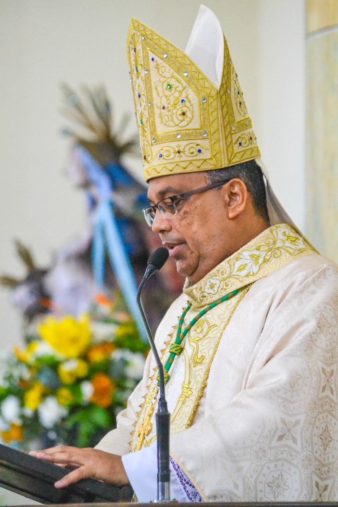
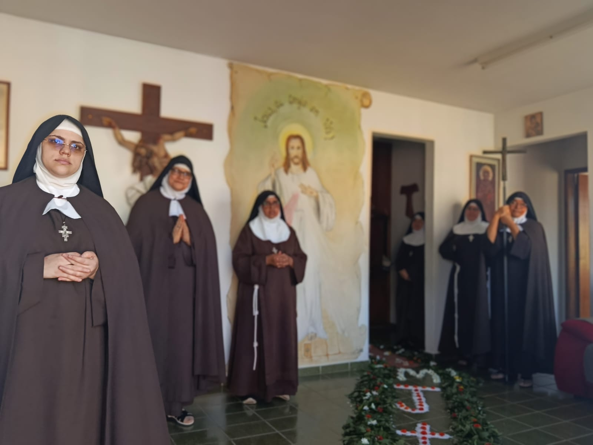
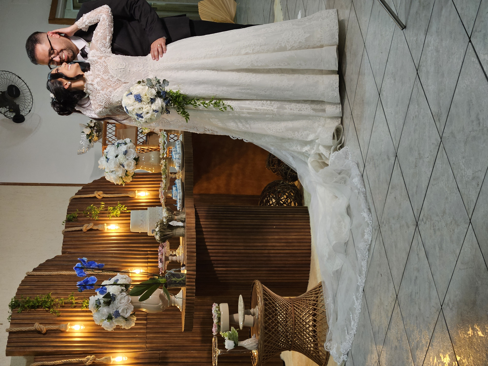
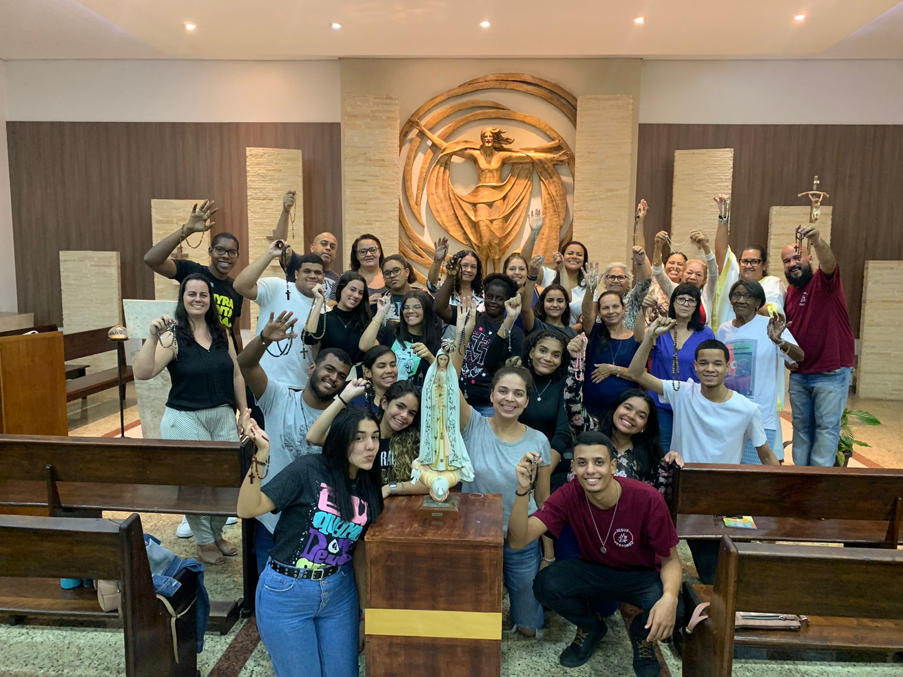

Nossas Vocações
Cada vocação é uma resposta única ao chamado de Deus. Conheça as diferentes formas de viver o amor e o serviço na Igreja.

Sacerdotal
O sacerdote é chamado a ser pastor segundo o coração de Cristo, servindo ao povo de Deus por meio dos sacramentos e da Palavra.

Religiosa
A vida consagrada é um testemunho do amor radical a Deus, vivido em comunidade, oração e serviço.

Matrimonial
O matrimônio é o chamado ao amor fiel e fecundo, sinal da aliança entre Cristo e sua Igreja.

Laical
Os leigos vivem sua missão no mundo, levando Cristo para os ambientes de trabalho, estudo e convivência.